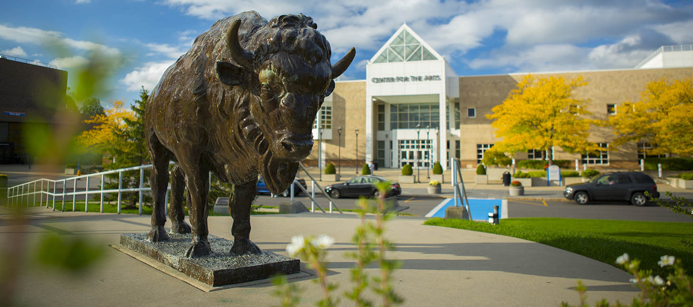
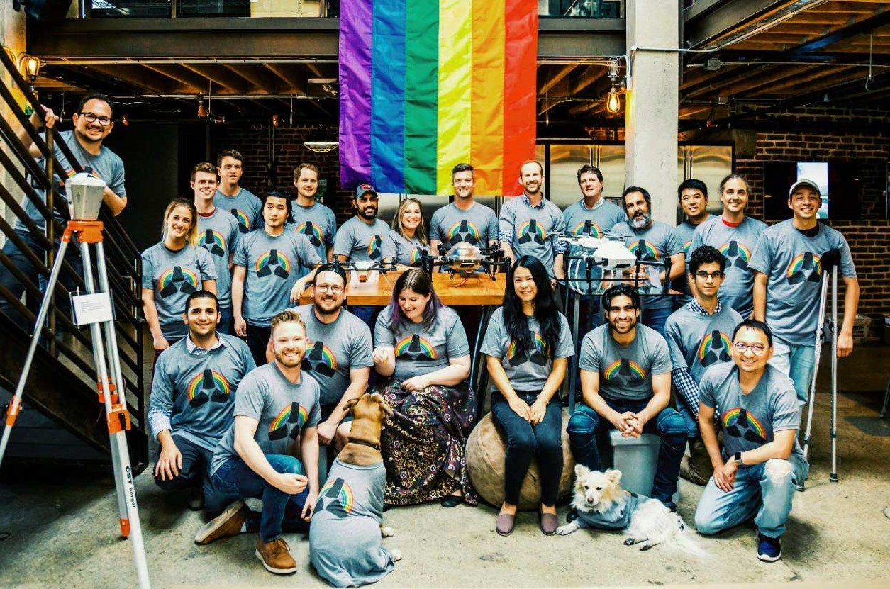

Intro
Hi, I am Shibo from Beijing. I am now a new grad master student in UB and the focus of my area is the Internet of things. I am actively looking for a software development engineer position
Skills
Python
Javacsript
C/C++
Java
React.js
Redux
Angular 9
Node.js
Express.js
HTML/CSS
Linux
MySQL
MongoDB
JSON
Git
XML
Big Data Analytics/ML
Functional Programming
OOP
Cloud Computing
Internet of Things
Android Development
Web Development
Embedded Software
Education

State university of New York at buffalo
Master
Electrical and Computer Engineering - Internet of Things
The North China University of Technology
Bachelor
Mechanical and Electrical Engineering
Work Experiences

SKYCATCH
Software Engineer Intern
May/2019 - Aug/2019 ( San Francisco )
Created and built a new individual service (events and error service) to monitor and log events and errors in all other services based on Javascript (NodeJs) and provide the events and errors for the cloud(segment and sentry) online(also support offline sync). This service can make informed decisions for customer success and help engineers have visibility for troubleshooting.
Embedded software development about Payload SDK (DJI) based on Linux, C++, implement callbacks about the communication between the transmitter, computer, onboard SDK and drones so that we can use our customized camera on the payload with the interface I designed.
Putting the web EDGE1 app, into Windows, Linux or Mac OS to have it run as a native local app based on electron js (Javascript, HTML, CSS). Localized the front-end and server so that our data can be analyzed in a full local environment.
YOROTEK Intelligent Manufacturing Technology
Software Engineer
Oct 2016 – Feb 2018 ( Beijing )
Sep 2015 – Jun 2016 ( Beijing )
Design, develop and test HTML5, CSS3, JavaScript and React.js that meets the browser standards for website and user interface by using the React.js, Redux for SPA development.
Worked with backend engineers to optimize existing API calls to create efficiencies by deprecating unneeded API calls.
Interacted with Testing Team, Scrum Masters and Business Analysts for fixing of Issues.
Assisted Experienced consuming APIs using AJAX and manipulating/consuming JSON objects. Worked with authorization security configurations using Node.js and JSON web tokens for authentication.
Experienced in working with Babel, Gulp, NPM, NPM scripts, and Webpack in application build and deployment processes.
Goldwind
Research and development intern
July/2016 - Sep/2017 ( Beijing )
Participated in insulation test, electro-hydraulic slip ring and electromagnetic compatibility experiments.Mastered the operational techniques of electronic devices under different working conditions, such as jar tester
Projects

. Customized Drink and Order System - MERN
designed and developed the Single Page Application using ReactJS v16.6 and CSS3 and bootstrap used for better UI.
Built the REST API, which Includes routing, handling errors, adding controllers, validating API input and request. Dealt with in-app API development and third party REST API integration using the routing module. Invoked promises for handling data fetched from APIs in a synchronous manner.
Created automation Postman testing for API’s and integrated it with command line, organizing and maintaining the collections and environments. Built database about CRUD with mongoose. Also working on the order page which include send order request using AJAX to the server and save the order history in the database.
Stacks: Javascript, React.js, Express.js, Node.js, Mongoose, postman, Mongo Atlas
. Gourmet and Place Sharing Social App - MERN
Built frontend with reusable components like input, form, button, map, card, backdrop, validators, navigation, side drawer, and so on.
Built the REST API, which Includes routing, handling errors, adding controllers, validating API input and request, converting geocoding API, file uploading, and so on./
Built database about CRUD with mongoose. Also working on the security include hashing the password, JWT, middleware protection.
Stacks: Javascript, React.js, Express.js, Node.js, Mongoose, postman, Mongo Atlas
. Lock monitoring technology
In charge of the software part of the smart lock. Including the development of web app and android app. Sent the data from the Lora module to the cloud (Senet and Thingspeak).
Both client-side and service-side implementation of the web app. received the data from the cloud in real-time and update the front-end on the web page in real-time. The Web is hosting on GitHub: https://mcd9ub.github.io/
Best project award for the 1st Buffalo Day for 5G and wireless Internet of Things conference.
Stacks: Javascript, Html, CSS, Java, XML, Restful API, Senet, Postman, Thingspeak,NodeJs, Firebase, Restful API, DialogFlow, JSON, Node.js.
. Movie Ranking Application
Developing new user-facing features, building reusable components about pagination, filtering, routing and sorting for future use. (Javascript, React.js, Bootstrap 4, CSS)
Developing micro backend services for authentication and authorization with the databases. (Node.js, Express, MongoDB, JSON, Sentry)
Deploying the full-stack application. (Mlab, MongleDB, Heroku)
. Android development based on Android Studio
Personal designed an application about sensor data display and the data algorithm. Sensors include acceleration, light, gyroscope, magnetic, gravity, pressure and proximity.
Including the data display of 7 sensors and interaction between data and interface. Data also be used for the pedometer algorithm and life condition detector algorithm. https://github.com/shibo-joey
. Graph signal processing technique in image processing
Designed an appropriate underlying graph connecting pixels with weights that reflect the image structure, then interpret the image (or image patch) as a signal on a graph, and apply GSP tools for processing and analysis of the signal in graph spectral domain.
MATLAB Algorithm Implemented: Max-flow/Min-cut/ K-means.
. Consumer Optoelectronics
In this project, oximeter, real-time clock, GPS, LCD screen and Bluetooth functions are implemented based on Arduino.
Using sensors to gather the data from the human body then communicate data to personal mobile phones or laptops through Bluetooth so that the data can live monitored by the user.
. Online study and test system
Create, write and design an online study and certification quiz system for users about our products (explore1, edge1, flight1) based on Adobe Captivate 2019 and provide to our customers using moodle3.7(LMS) and AWS. They can learn how to use our product and having a test for certification.
. Digital Communication Systems Design and Implementation
Implementing two analog message signals, or two digital bit streams, by changing the amplitudes of two carrier waves, using the amplitude-shift keying digital modulation scheme to display 16-QAM waveform and its constellation on display base on FPGA board.
. Design of Joint Unit Motion Controller for Robotics-Graduation Design
Designed the motion controller based on STM32 microcontroller to realize the multi-channel synchronous motor motion control, and joint unit Angle position detection.
Built the motor test platform to complete the motor synchronous motor function test.
Design of Parallel Joint Control Circuit for Flexible RobotsCollege Student Research and Career-creation Program of Beijing City
. Remaining Useful Life Prediction of Aluminum Electrolytic Capacitors Used in Wind Turbines
Published on 2017 IEEE Pages 14.
published on 2017 ICSREE Pages 121-124.
Contact